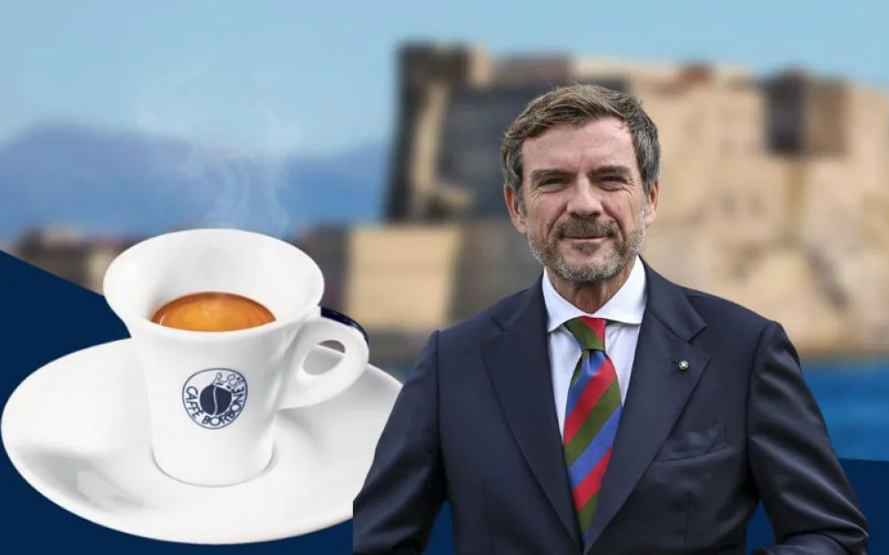

Da 25 anni al vostro fianco
La storia di Caffè Borbone inizia quando Massimo Renda, ancora giovanissimo, scopre i segreti della tostatura del caffè lavorando nella torrefazione dello zio.
Ma la storia del “caffè degno di un re” inizia molto prima!
Bisogna infatti tornare al lontano 10 maggio 1734 quando, prima di entrare a Napoli, Carlo III di Borbone, ospite del monastero dei frati Minimi,
rimase estasiato dall'aroma e dal sapore di una sconosciuta bevanda preparata dagli stessi frati, bevanda che altro non era che caffè,
tostato e macinato dai religiosi con tutte le dovute attenzioni.
Tornando ai giorni nostri, più precisamente nel 1997, Massimo Renda fonda a Caivano (NA) Aromatika Srl e nel 2000 lancia Caffè Borbone,
il cui marchio (autorizzato da una particolare concessione del principe Carlo di Borbone in persona) evoca la storia di Napoli
e la figura di re Carlo III di Borbone.
Nel 2018, il gruppo Italmobiliare ha acquisito la maggioranza di Caffè Borbone con l'obiettivo di contribuire a svilupparne il pieno potenziale.
Questo ha comportato l'intensificazione della penetrazione in tutti i canali del mercato italiano, l'avvio del percorso di internazionalizzazione e lo sviluppo della gamma di prodotti, consolidando ulteriormente la forza del brand.
